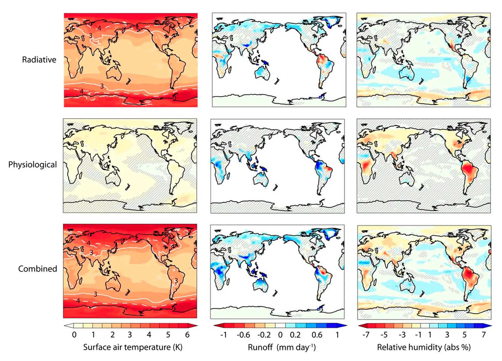

Importance of carbon dioxide physiological forcing to future climate change
Key finding. In response to doubled carbon dioxide, the radiative effect raises mean surface air temperature over land by 2.86 ± 0.02 K and the physiological effect on land plants adds a further 0.42 ± 0.02 K — and for runoff the physiological effect is the larger of the two, contributing 8.4 ± 0.6% against the radiative effect's 5.2 ± 0.6%.

What question did this research address?
Carbon dioxide changes climate two ways. It traps longwave radiation, which is the effect everyone models. It also makes plants partly close their stomata, reducing transpiration, which warms and dries the land surface independently of any radiative change.
The second effect is routinely omitted or treated as secondary. This paper asked how large it actually is, by separating the two in a coupled land-atmosphere model.
What did we find?
Separating the two effects in the NCAR coupled Community Land and Community Atmosphere Model gives land warming of 2.86 K radiative, 0.42 K physiological, and 3.33 ± 0.03 K combined.
For runoff the ordering reverses. The radiative effect adds 5.2% mainly by increasing precipitation over the continents; the physiological effect adds 8.4% mainly by cutting evapotranspiration from them.
Combined, runoff rises 14.9 ± 0.7% — so roughly half the projected increase comes from a mechanism that has nothing to do with trapping heat.
The two effects reach the same outcome by opposite routes: one adds water from above, the other stops plants returning it to the air.
Why does it matter?
It makes plant physiology a first-order term in projections of the land water cycle rather than a refinement. A model that omits stomatal closure understates land warming by about 15% and understates runoff increase by more than half.
That has direct consequences for flood and water resource projections, since runoff is what rivers carry — and the omitted term is the larger contributor.
It also means carbon dioxide cannot be fully represented by its radiative forcing, which is the same reason solar geoengineering cannot exactly reverse it: sunlight does not close stomata.
Citation
Long Cao, Govindasamy Bala, Ken Caldeira, Ramakrishna Nemani, and George Ban-Weiss (2010). Importance of carbon dioxide physiological forcing to future climate change. Proceedings of the National Academy of Sciences 107, 9513-9518.
Related
- How long does a carbon dioxide emission go on warming the planet?
- Climate response to changes in atmospheric carbon dioxide and solar irradiance on the time scale of days to weeks (Cao et al., 2012)
- Combined climate and carbon-cycle effects of large-scale deforestation (Bala et al., 2007)
- The role of terrestrial plants in limiting atmospheric CO2 decline over the past 24 million years (Pagani et al., 2009)